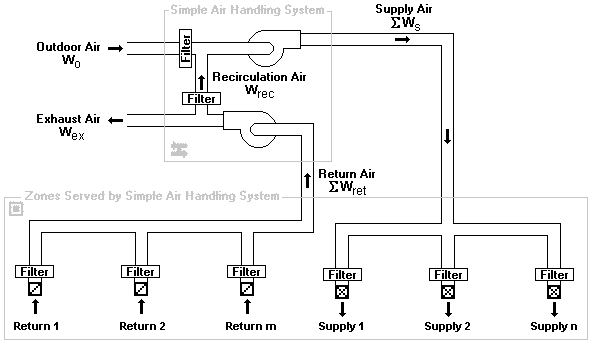

The simple air-handling system (AHS) provides a convenient means of incorporating an air-handling system into a building without having to draw and define an entire duct system. Each simple air-handling system consists of two implicit airflow nodes or zones (supply and return sub-systems), three implicit flow paths (recirculation, outdoor, and exhaust), and multiple zone supplies (inlets to zones) and zone returns (outlets from zones) that you can place within zones throughout the building. You specify the airflow rates of each supply and return point. Simple air-handling systems do not require you to associate both zone supplies and zone returns with them. You may use the simple air-handling system to only supply outdoor (ambient) air to a building or to only exhaust air from the building. The following figure shows a schematic representation of a simple air-handling system.

Determination of System Airflows
ContamX determines the airflows rates associated with each air-handling system according to the following algorithm. More detailed explanations for the values that you must input for this algorithm are explained in the Defining Air-handling Systems section that follows.
First, all of the user-defined supply (supply air to the zones) and return (return air from the zones) airflow (mass) rates are summed.
SWs º the sum of all supplies
SWret º the sum of all returns
The amount of outdoor air that the system requires is then determined by
W'o = max( fo·SWs, min(SWs, Wo_min ) ),
where, fo º the fraction outdoor air = Wo/Ws
You input this parameter as the Outside Air Schedule of a simple air handling system (See Air Handling System – AHS Properties), and
Wo_min º the "minimum outdoor airflow" parameter that you input.
The rate at which air is recirculated via the implicit recirculation flow path, Wrec, is determined by
Wrec = min(SWret, SWs - W'o ).
The rate at which outdoor air is brought in by the system via the implicit outdoor airflow path, Wo, is determined by
Wo = SWs - Wrec.
And the rate at which exhaust airflows to the ambient via the implicit exhaust flow path, Wex, is determined by
Wex = SWret - Wrec.
Based on this algorithm the amount of outdoor air the system will provide, Wo, will be between Wo_min and fo·SWs as long as the demand for supply air, SWs, is sufficient to provide this value. Otherwise the system will provide SWs. When the sum of the supply flows, SWs, exceeds the sum of the return flows, SWret, the balance is made up of outdoor air. Any excess return air is exhausted via the implicit exhaust flow path.